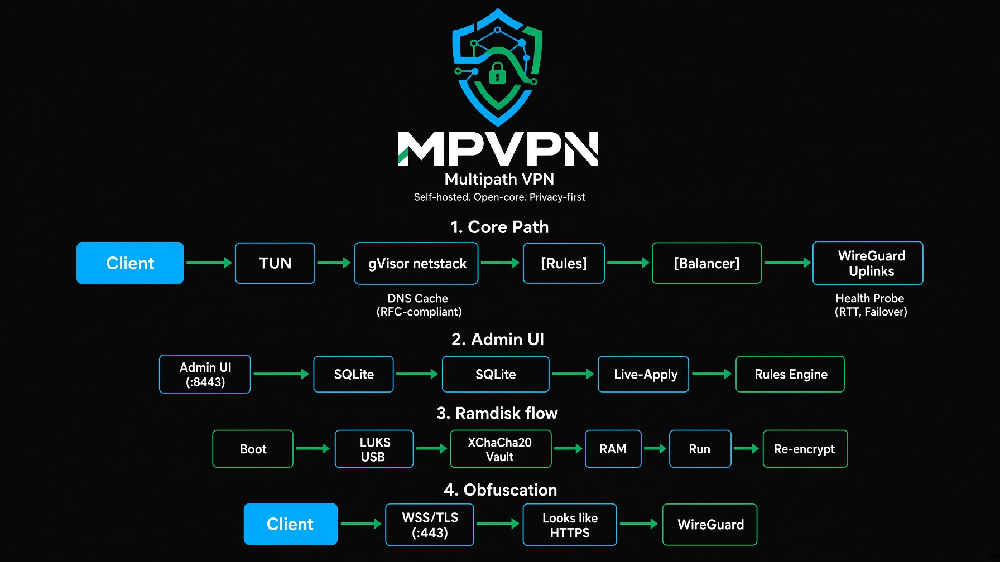

Several VPN tunnels at once.
Automatic failover. Leak-proof. Runs from RAM.
MPVPN is a self-hosted VPN gateway for your home or office network. It sends every connection through one of several VPN tunnels – from the same or different providers (Mullvad, NordVPN, IVPN, Surfshark, Proton, your own VPS …). If a tunnel fails, traffic moves on within seconds. Nothing leaves your network outside a tunnel.
One static Go binary with userspace WireGuard and a native OpenVPN client, on Alpine Linux – or as a stateless boot image entirely from RAM.
Programs and boot images are free to download from the releases – built reproducibly, boot-tested and signed (Ed25519). The VPN core runs without a license; Pro features need one.
| mpvpn-x86_64.iso | USB stick, CD, KVM/QEMU/Proxmox (BIOS + UEFI) |
| mpvpn-x86_64.qcow2 | KVM disk image |
| vmlinuz / initramfs / ipxe | PXE network boot |
| mpvpn-pro-linux-amd64 | normal installation (Alpine, Debian, Ubuntu, Alma/Rocky) |
| mpvpn-obfs | Mac/Linux client for obfuscation |
| SHA256SUMS, signatures, SBOM | verify before use |
| Multi-path tunnels | Any number of WireGuard, OpenVPN and IPsec/IKEv2 uplinks at once |
| 6 strategies | Sticky, WRR, least connections, lowest RTT, failover, bandwidth-aware |
| Health checks | RTT probes; dead tunnels drop out in seconds and come back automatically |
| Rules | Domain wildcards, IP/CIDR, port, protocol, client/network |
| VLANs (Pro) | 802.1Q VLANs with their own tunnels each (e.g. VLAN 10 → NordVPN, VLAN 20 → Mullvad), DNS through the same tunnels, own DHCP server, admin-only VLANs, isolation |
| Network page | Every device of the LAN and the VLANs as map and table – names, vendor, device type, which tunnels it used; RAM only, history can be switched off |
| Split DNS | Templates, DNS cache with IP→name mapping, auto-refreshed lists |
| Provider assistant (Pro) | Log in at NordVPN, PIA, Mullvad, IVPN, AzireVPN or Surfshark, pick country, city, protocol (WireGuard, OpenVPN, IPsec/IKEv2) and servers – uplinks are created, PIA keys renewed automatically; guided import for Proton, Windscribe, ExpressVPN, PureVPN |
| Import | .conf (WireGuard) and .ovpn (OpenVPN) from your provider |
| IPsec/IKEv2 | Router logins of providers without WireGuard export (e.g. AdGuard VPN) – IKEv2 and ESP run inside MPVPN, no strongSwan; form with connection test |
| Gateway mode | Default gateway with its own DHCP server, or next to your router |
| Kill switch | nftables: nothing leaves the LAN outside a tunnel |
| DNS through the tunnel | Port 53 captured, DoT/DoH to third parties blocked |
| IPv6 off | Kernel + sysctl |
| Leak self-test | WAN IP vs. exit IP of every tunnel, kill switch, tunnel DNS |
| WireGuard + ML-KEM-1024 | Mullvad ephemeral peer, detected automatically |
| OpenVPN hybrid TLS | X25519MLKEM768 in the control channel |
| Backups | age with post-quantum recipients |
| Rotation (Pro) | Switch tunnels and servers from a pool, manual or scheduled with jitter, grouped by provider |
| Network fingerprint | Random WAN MAC, neutral DHCP identity, uniform TTL |
| Obfuscation (Pro) | WireGuard over TLS/WebSocket on 443 to your own relay – looks like HTTPS |
| Mac client | mpvpn-obfs: the WireGuard app on a Mac, tunnelled as HTTPS |
| No logs | Logs and audit only in RAM, memory locked, no core dumps |
| Stateless | Runs entirely from RAM, no swap, no disk writes |
| LUKS USB key | Config on an encrypted stick, open only for seconds |
| Network vault | Or an encrypted vault on a web server / KVM disk |
| Verified boot | Signed hashes of kernel and initramfs checked before unlocking |
| Boot media | ISO, USB, qcow2, PXE/iPXE from one build |
| Panic button | Dashboard, shell or knock: lock down or wipe |
| USB pull | Removing the key ends the session |
| Duress passphrase | Wipes instead of unlocking |
| Dead-man switch | Wipe when you stop checking in |
| Paranoid mode | Kept alive by knocks that look like failed IMAP/SMTP/DNS logins |
| Web interface | HTTPS :8443, German and English |
| 2FA | TOTP and WebAuthn/passkeys |
| Live apply | Immediate, with automatic rollback |
| Remote access | Management WireGuard: admin UI/SSH from outside only through an own tunnel, QR per device |
| Shell | Every setting via mpvpn-pro -get/-set or the config file |
| Signed updates | Notice in UI/CLI/login, optional auto-update with rollback watchdog |
| Supply chain | Reproducible builds, pinned dependencies, govulncheck, SBOM, offline root key |
VPN core, unlimited tunnels
Pricing announced at launch
The number of tunnels is never limited. A license is bound to one device and can be moved.
Privacy-respecting licensing: the periodic check sends only a machine ID and the program's own checksum – never your traffic, DNS or browsing. Every release is reproducible and signed, so the checksum can be verified against the public release.

LAN client ─▶ TUN ─▶ netstack ─▶ DNS ─▶ Rules ─▶ Balancer
├─▶ WireGuard uplink (PQ: ML-KEM-1024)
├─▶ WireGuard uplink (obfuscated: WSS/443)
└─▶ OpenVPN uplink (PQ: X25519MLKEM768) … any number
Kill switch (nftables): nothing leaves outside a tunnel
| Alpine Linux | reference platform (OpenRC) |
| RAM-disk image | Alpine-based, x86_64 |
| Debian 13, Ubuntu 24.04, Alma/Rocky 10 | tested, mpvpn-hostcheck adjusts the host |
| Requirements | /dev/net/tun, nftables, iproute2 – 1 vCPU, 512 MB RAM |
Censorship-resistant transports (Hysteria2, VLESS + Reality, Shadowsocks-2022, CDN fronting), AmneziaWG, post-quantum for more providers, a post-quantum PSK service on your own VPS.